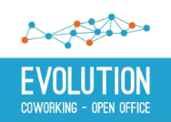

Привіт усім !
Rails Girls воркшоп тепер відбудеться в Тернополі!
Безкоштовний креш-курс веб програмування, створений спеціально для дівчат. Це унікальна можливісь поринути в магічний світ Ruby On Rails і втілити свою веб-ідею в реальність.
Останні оновлення про нашу подію читайте у facebook
Ти вже розробляєш програми на Ruby On Rails? Хочеш поділитися своїми знаннями і допомогти дівчатам? Стань ментором
Ти навчишся створювати прототип, дизайн і програмувати разом із досвідченими менторами
Тобі потрібно взяти з собою ноутбук, курйоз і трохи уяви!
Хочеш допомогти? Ми шукаємо партнерів та менторів. Напиши нам.
| 18.00 - |
Installation partyЗнаймоство дівчат з менторами. Встановлення Ruby On Rails на ноутбуки учасниць. Перші кроки з Try RubyМісце зустрічі: он-лайн (skype / hangout) |
|---|
| 9:00 - 10:00 |
Registration & coffeeРеєстрація учасниць та менторів, "розминка" перед стартом проекту |
|---|---|
| 10:00 - 10:30 |
Welcoming wordsВступне слово. Введення в курс веб розробки на Ruby On Rails |
| 10:30 - 13:00 |
WorkshopПродовжуємо розробку |
| 13:00 - 14:00 |
Lunch |
| 14:00 - 16:00 |
WorkshopРозширюємо можливості своєї програми |
| 16.00- 16:45 |
Bentobox - Understanding Web AppsРезюме того, що ми дізналися. Конкурс на розуміння веб-технологій |
| 16:45 - 18:00 |
WorkshopДодаємо ще кілька нових фіч до свого проекту |
| 18:00 - 19:00 |
Deploy & final touchesОстанні штрихи та розгортання програми на зовнішньому сервері |
| 19:00 |
Hell yeah, the end! |
Реєстрація завершилась: 25 лютого 2016
Повідомлення учасниць: 28 лютого 2016
Rails Girls Ternopil проводиться завдяки нашим чудовим партнерам:
 Coworking - open office EVOLUTION - це затишне місце в самому центрі Тернополя для людей, які хочуть познайомитися з новими та цікавими людьми, спільно створити чи долучитися до проекту або поділитися досвідом..
Wizardi is a small team of passionate developers, thinkers and designers creating juicy stuff for the web.
Іван Сороколіт - депутат Тернопільської міської ради.
Благодійний фонд "МагнетікВан.орг" - просвітництво та допомога дітям. Ми прагнемо змінити систему освіти в Україні та навчити мільйони дітей. Наша команда – це люди, що творять добро, дбають про дітей, та несуть мир та впевненість у завтрашньому дні.
 Школярик - надійний помічник у щоденних справах, лiдер на ринку зошитної продукції України, і не лише! «Школярик» у своїй стратегiї обрав орієнтацію на системну якiсть продукцiї, креативний емоцiйний дизайн та технологічні інновації.
Школярик - надійний помічник у щоденних справах, лiдер на ринку зошитної продукції України, і не лише! «Школярик» у своїй стратегiї обрав орієнтацію на системну якiсть продукцiї, креативний емоцiйний дизайн та технологічні інновації.
Crowdin - Тернопільська ІТ компанія, що любить і робить кльові онлайн сервіси. Серед наших клієнтів такі компанії, як Microsoft, Kickstarter, Reddit, OnePlus, Xiaomi, Cyanogenmod, Minecraft та інші.
Скільки коштує участь у воркшопі? Ніскільки, це безкоштовно! Принось із собою хороший настрій і трохи зацікавленості... і не забудь свій ноут!
На кого розрахований воркшоп? Дівчата будь-якого віку з базовими навиками роботи з комп'ютером.
Чи може хлопець стати учасником? Так, але ти повинен бути в компанії із дівчиною. Проте перевага участі надається дівчатам.
Як ви будете вибирати учасниць? Ми хочемо створити групу зацікавлених і мотивованих до навчання.
Я вмію програмувати - Як я можу допомогти? Ми також шукаємо менторів для наших учасниць. Заповни форму
 Наталя Ткачук
Тернопіль
Марія Загірська
Тернопіль
Юлія Гаращук
Тернопіль
Oksana Kunikevych
Львів
Наталя Ткачук
Тернопіль
Марія Загірська
Тернопіль
Юлія Гаращук
Тернопіль
Oksana Kunikevych
Львів
 Мар'ян Крекотень
Тернопіль
Bohdan Varshchuk
Львів
Yurii Habrusiev
Львів
Станіслав Ільницький
Чернівці
Anton Maminov
Львів
Denys Medynskyi
Львів
Денис Курець
Івано-Франківськ
Yaroslav Oslavskiy
Львів
Надія Карачевська
Львів
Наталя Ткачук
Тернопіль
Мар'ян Крекотень
Тернопіль
Bohdan Varshchuk
Львів
Yurii Habrusiev
Львів
Станіслав Ільницький
Чернівці
Anton Maminov
Львів
Denys Medynskyi
Львів
Денис Курець
Івано-Франківськ
Yaroslav Oslavskiy
Львів
Надія Карачевська
Львів
Наталя Ткачук
Тернопіль